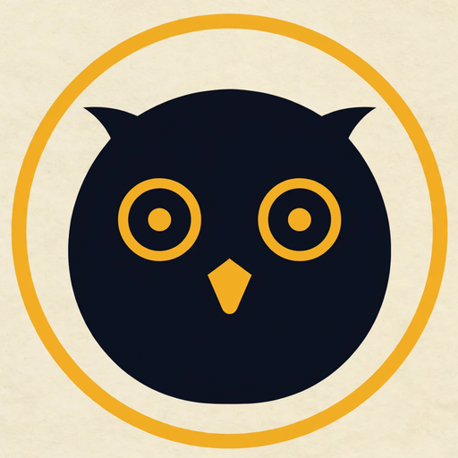

Under the hood · from the README
Official records in. Quoted evidence out.
Sources
congress.govbill status
govinfocommittee reports
hearing transcriptsplanned
→
Ingest · no model
govinfo parserweekly job
CSV drop9 tables
validate-csvself-check gate
csv-to-json
→
Data · contracts A + B
recordsspeaker-tagged text
taxonomy · topics · peoplestances · bills
⇄
Muse Spark
stances + exact quotes
cited summaries
bill context + yes/no questions
blind bias audit
human approves drafts before merge
→
Contract gate
validate.mjstypes · ids · verbatim quotes
→
Website · no model calls
Explore · Topics
Bills · Legislators
match board
Other Meta modelsMuse Image · logo and share cardsMuse Code · coding agent that built much of the site
Muse Sparkdeterministic, zero model callshuman review · the website
Muse Spark · one real example
From a committee report to quoted evidence.
H. Rept. 119-106 · Dissenting Views · govinfo.gov
Republicans propose spending ten times the amount on Trump's failed border wall as they do on CBP personnel.
Committee Democrats support the use of more efficient border security technologies to catch and detect smugglers and interdict drugs. Yet when Rep. Correa offered an amendment enabling funding in the bill to be used for new, innovative technologies, Republicans opposed that effort.
→
Extracted by Muse Spark
memberRep. J. Luis Correa · CA-46
topicBorder Security
stancesupport · +0.70
quote“…support the use of more efficient border security technologies…”
confidencehigh
check✓ verbatim in source
Muse Spark · what it does here
It reads the record, and checks itself.
20,647
quotes extracted and checked word for word
every stance links to its verbatim quote and source
765
bills turned into plain yes-or-no questions
drafted by Muse Spark · approved by a person
39
conditions behind votes
“I would vote yes if…”
101
quotes re-scored blind, to catch bias
same model · names and parties hidden
Next · any source, updated continuously
Every new source is one more adapter.
congress.gov bills and votestoday
govinfo committee reportstoday
hearing transcriptsnext
floor speechesnext
press releasesnext
Facebook · public postsnext
Instagram · public postsnext
→
Same pipeline
adapter → contract-A record
Muse Spark reads it
contract gate
→
Positions, as they speak
new statement · minutes ago
stance on the topic updated
linked to its quote
new vote · today
position changed
⟲ support → oppose
new post · today
match results refreshed
for every voter who answered
Illustration of planned sources and update flow
Next · decades of records
One Congress today. Every Congress tomorrow.
Official records→Strict contracts→Muse Spark→Quoted evidencesame pipeline
Illustration of planned coverage
Next · public social media
Public posts, cleaned up into insight.
→
OWL evidence
Verbatim quote✓
Source link✓
Stance on the topicsupport
Model confidencehigh
Checked against the votes on record.
Illustration of a planned source · placeholder posts, no real content
Next · every democracy
Public political speech, at planetary scale.
100M+Instagram followers · Narendra Modi, Prime Minister of India
first serving world leader past 100 million · reported February 2026
Next · Meta multilingual models
Every voter, in their own language.
Rep. Laura Friedman
CA-30 · Democrat · Water Resources Development Act of 2026
final-passage vote · yea
Supports the Water Resources Development Act of 2026.
Concept · translations shown for illustration

One Congress today.
Informed voters everywhere tomorrow.
az30667176-sudo.github.io/owl